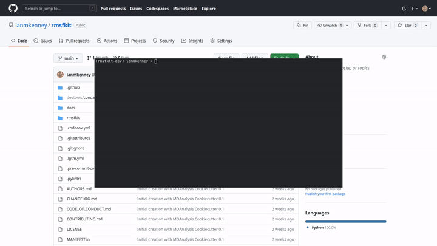

Part 6: Making an initial release
See our YouTube tutorial for a video demonstration of this section.
While using git does satisfy the requirement that our MDAKit code be versioned, it is a good idea to make numbered releases with (human-understandable) version numbers to easily track your code as changes and improvements are made.
The MDAKit cookiecutter uses versioningit for version management. In brief, software versions are set through git tags.
Since the Kit is initiated without tags, the current version is set to
0.0.0.>>> import rmsfkit >>> rmsfkit.__version__ '0.0.0+3.g0b64a6c'
Note: As commits are added, the version is updated with the commit hash. The exact output here differs between the YouTube tutorial and video embedded above, and from what you will see.
Bump this to a
0.1.0in preparation for an initial release on GitHub using a git tag:$ git tag 0.1.0
This should now be reflected in the interpreter (though may require a package reinstall):
>>> import rmsfkit >>> rmsfkit.__version__ '0.1.0'
Tags are not pushed to remote repositories by default. To push the
0.1.0tag, use:$ git push --tags
Viewing the repository tags page on GitHub, you should now see a
0.1.0tag. Expanding its menu gives us the option to create a release based on the tagged code. Enter a release name, such as v0.1.0 and publish!
Going forward, you could publish this release to a package distribution platforms such as PyPi or Conda-Forge, though this is not covered in this example.
Having met all the requirements, it’s now time to register our MDAKit!
Progress: MDAKit requirements
✓ Uses MDAnalysis
✓ Open source + OSI license
✓ Versioned + on a version-controlled repository
✓ Designated authors and maintainers
✓ (At least) minimal documentation
✓ (At least) minimal regression tests
✓ Installable as a standard package
✓ (Recommended) community information available
(Recommended) on a package distribution platform